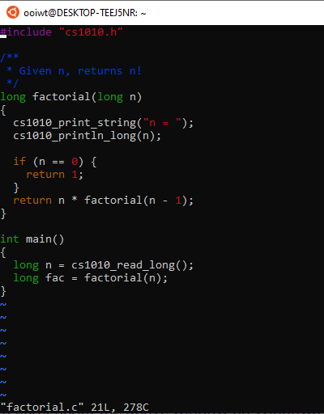
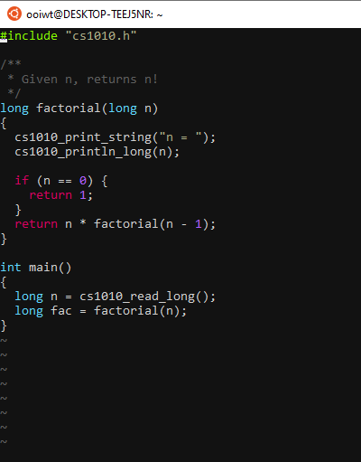

Vim Extensions on PE Hosts
Learning Objectives
Students should
- understand plugins and color schemes.
Background
CS2030S provides a minimal set of vim extensions (i.e., plugins and color schemes) officially. At the beginning of the semester, students can install the same set of extensions following the vim setup procedure. The same set of official extensions will be made available during the practical exams.
Students are free to install any additional color schemes or plugins if they wish. These additional extensions, however, are not allowed and will not be available during the practical exams.
The following are the officially supported vim extensions in CS2030S.
Color Schemes
We installed three color schemes ~cs2030s/.vim/colors.
The three color schemes are:
You can change your vim color scheme using the :color command. For instance,
1 | |
You can add the line color gruvbox (without :) to your ~/.vimrc so that the color scheme is loaded at the start of every vim session.
Some color schemes display differently depending on whether the background is set to dark or light
Some examples, with set background=dark in ~/.vimrc:
The Vim default color scheme:

The molokai (CS2030S default) color scheme:

The gruvbox color scheme

Plugins
We support the Airline plugin, which provides an informative status bar in vim.